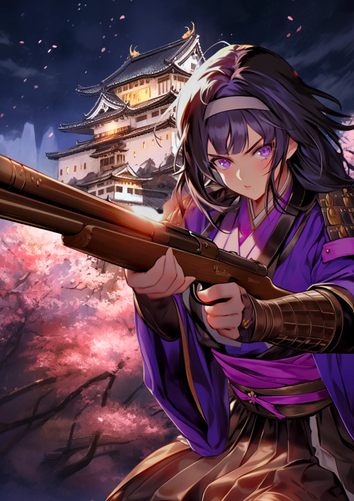

新島八重
戦場に舞う桜
桜と白い城
会津若松城と大河ドラマでお馴染みの八重の桜をイメージ。
銃と鉢巻
会津若松籠城戦で戦っている様子をイメージ。女性でも最前線で戦ったんだ。
[人物プロフィール]
生没年
1845年～1932年
時代
1845年～1932年
身分
教育者
戦国時代みたいに刀を持って戦ったことがあるんだ！

 新島八重ってどんなひと？
新島八重ってどんなひと？
明治時代の女性で、教育者や看護師として活躍しました。特に戊辰戦争での戦闘的な活躍や、後に同志社大学の創設に携わったことが有名です。「八重の桜」として、彼女の波乱万丈な生涯が大河ドラマにもなりました。
コラム
（カード右上）明日の夜は 何国の誰か ながむらん なれし御城に 残す月かげ
カードの効果解説！
会津若松城籠城
会津若松城籠城は、戊辰戦争中の1868年に起きた戦いです。会津藩士たちは、新政府軍に対して城を守り続けました。特に、白虎隊という若い武士たちの奮闘が有名で、彼らの勇気は今も語り継がれています。

スペンサー銃
スペンサー銃は、アメリカで開発されたリボルビングライフルです。幕末の日本でも使用され、戊辰戦争で活躍しました。この銃は、戦術に大きな影響を与えました。

弥生時代ってどんな時代？
弥生時代ってこんな時代 ってのをなんとなく。時代かぶってたりしたら関連人物 との繋がりについて纏める感 じで。弥生時代ってこんな時代 ってのをなんとなく。時代かぶってたりしたら関連人物 との繋がりについて纏める感 じで。


クイズ！：新島八重が戦いのときに使った武器はなんでしょう？